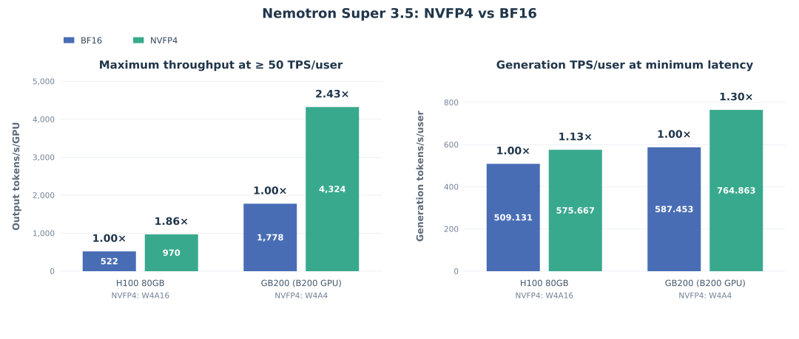

A hiker searching for a lost item keeps a quiet tally of whether to give up. Rounding each clue a bit coarser rarely changes what they know, but it can shave the small margin needed to say "enough, I'm done", so they keep circling. A more experienced hiker, with a firmer sense of when to stop, shrugs off the same rounding.
잃어버린 물건을 찾는 등산객은 언제 포기할지 속으로 저울질한다. 단서를 조금 거칠게 반올림해도 아는 내용은 거의 바뀌지 않지만, "이제 그만"이라고 말하는 데 필요한 작은 여유는 깎일 수 있다. 그러면 계속 맴돈다. 멈출 때를 더 확실히 아는 노련한 등산객은 같은 반올림에도 흔들리지 않는다.
How it works: precision by sensitivity, then a short repair작동 방식은 민감도에 따른 정밀도와 짧은 보정
A gradient-weighted sensitivity search found the output head carries nearly half the NVFP4 sensitivity, attention and Mamba projections come next, and experts are the most robust. So the released recipe spends 4 bits only where parameters dominate.
기울기로 가중한 민감도 탐색에서 NVFP4 민감도의 거의 절반은 출력 헤드에 있었고, 그다음이 어텐션과 Mamba 투영이며, 전문가가 가장 둔감했다. 그래서 공개된 구성은 파라미터가 몰린 곳에만 4비트를 쓴다.
- Choose precisions.정밀도 고르기.Experts in NVFP4, attention and Mamba linear layers in FP8, latent projections in BF16, KV cache in FP8.전문가는 NVFP4, 어텐션과 Mamba 선형층은 FP8, 잠재 투영은 BF16, KV 캐시는 FP8.
- Calibrate with MSE scales.MSE 스케일로 보정.1,024 image–text SFT samples; error-minimizing block scales recover 100.06% on 12 benchmarks vs 98.58% for max scaling.이미지·텍스트 SFT 샘플 1,024개를 쓰고, 오차를 최소화하는 블록 스케일이 벤치마크 12개에서 100.06%를 회복한다. 최댓값 스케일은 98.58%다.
- Short QAD.짧은 QAD.KL-only distillation for 200 iterations on SFT data; mixing in RL rollouts or training longer gave little extra.SFT 데이터로 KL만 쓰는 증류를 200회 돌린다. RL 롤아웃을 섞거나 더 오래 학습해도 이득이 거의 없었다.
Key point: 4 bits can tip the stop decision핵심은 4비트가 멈춤 판단을 기울일 수 있다는 것
FP4 weights barely change what the model knows, but they nudge a tiny stop-versus-continue margin, and over a long rollout that becomes a loop. After the final post-training stage the same 4-bit recipe no longer causes it.
FP4 가중치는 모델이 아는 내용은 거의 바꾸지 않지만, 멈출지 계속할지를 가르는 아주 작은 여유를 밀어내고, 긴 롤아웃에서는 그것이 루프가 된다. 최종 후학습 단계를 거친 뒤에는 같은 4비트 구성이 더는 루프를 일으키지 않는다.
Results: the small model holds up on agent benchmarks결과는 작은 모델도 에이전트 벤치마크에서 버틴다는 것
Lightning (30B, 3B active) in W4A16 keeps a 99.24% median score and writes 3.6% fewer tokens. The largest drop, 2.4 points, is on Terminal-Bench, with long-context AA-LCR close behind.
Lightning(30B, 활성 3B)은 W4A16에서 중앙값 점수의 99.24%를 지키고 토큰은 3.6% 덜 쓴다. 가장 크게 떨어진 곳은 Terminal-Bench로 2.4점이고, 장문 맥락 과제인 AA-LCR이 그 뒤를 바짝 따른다.

| Benchmark | BF16 | NVFP4 |
|---|---|---|
| SWE-Bench Verified | 52.20 | 52.20 |
| BrowseComp | 39.50 | 39.50 |
| Tau2 Telecom | 59.65 | 60.96 |
| GPQA Diamond | 76.45 | 75.38 |
| Tau3 Banking | 9.90 | 9.48 |
| Terminal-Bench v2.1 | 24.44 | 22.05 |
When you quantize an agent, watch truncation rate and output length per rollout, not just accuracy; they flag a weakened stop decision early. Keep the output head and Mamba output projection at FP8 or above, since 4-bit there mostly costs termination and length.에이전트를 양자화할 때는 정확도만 보지 말고 롤아웃당 잘림 비율과 출력 길이를 보자. 멈춤 판단이 약해지는 것을 일찍 알려 준다. 출력 헤드와 Mamba 출력 투영은 FP8 이상으로 두자. 그곳의 4비트는 주로 종료와 길이를 망가뜨린다.
The loop analysis rests on one benchmark and a pre-release checkpoint, and the authors call the expert-weight attribution an inference, since they never tested 4-bit activations alone. Robustness came from the final post-training stage, so it has to be re-checked for every new checkpoint.루프 분석은 벤치마크 하나와 공개 전 체크포인트에 기대고, 4비트 활성값만 따로 시험하지 않아서 저자들도 전문가 가중치를 원인으로 본 것은 추론이라고 밝힌다. 견고함은 최종 후학습 단계에서 생긴 것이라, 새 체크포인트마다 다시 확인해야 한다.